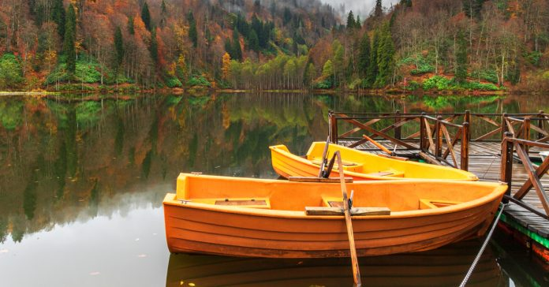
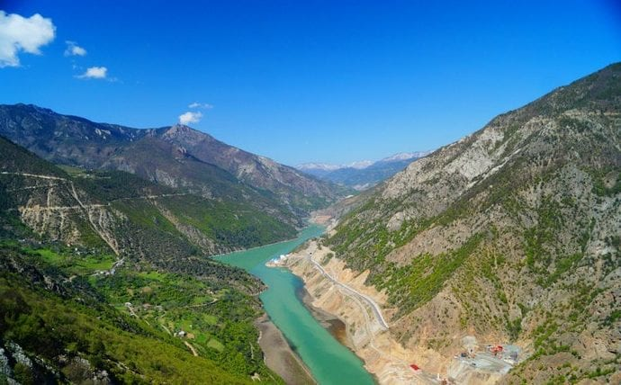

.jpg)
Artvin cam teras

Borçka Karagöl Tabiat Parkı

Yeryüzündeki cennet...
Bir profesyonel gibi fotoğraf çekin. Artvin gezilecek yerler listesinde, en ilgi çekici noktalardan biri olan cam teras,
Hatila Vadisi Milli Parkı’nın içerisinde, Sıkıldım Kayası bölgesinde yer alıyor. Hatila Deresi manzarasını izlemenize imkan tanıyan seyir terası,
490 metre rakımda yer alıyor. Dereden 220 metre yükseklikte, 7 metre uzunluğunda ve genişliğinde olan teras, yılda 25 bin ziyaretçiye ev sahipliği yapıyor.
Türkiye’nin en yüksek cam terası olma özelliğini taşıyan bu yerde, bir restoran mevcut ve ihtiyaçlarınızı karşılamak adına sizin için güzel bir durak olacak.
Uyarı! Araçla gitmek biraz sıkıntı olacağı için yürüyerek buraya çıkmanızı tavsiye ediyoruz. Çünkü yolları bozuk ve tek şerit olduğundan karşı yönden gelen bir araçla karşılaşabilirsiniz.
Kişi: 2 TL / Otomobil: 5 TL
Artvin yaylaları dendiğinde akla ilk gelen, şehrin ve Türkiye’nin de ötesinde dünyanın önemli doğa harikalarından biri olan Karagöl Yaylası, Artvin’e 55 km mesafede konumlanan Borçka’da yer alıyor. Borçka ilçe merkezine 25 km uzaklıktaki Karagöl, yolda giderken dahi sizi kendinize hayran bırakmaya başlıyor..
Neden Gitmeliyim?
2002 yılında tabiat parkı olarak kabul edilen Karagöl Tabiat Parkı, oldukça geniş bir alana sahip. İçerisinde binlerce tür bitki ve hayvana ev sahipliği yapan parkta, gayet rahat bir şekilde vakit geçirebilirsiniz. Park ihtiyaçlarınızı tam olarak karşılamasa da, çevresindeki pek çok tesisten yararlanabiliyorsunuz. Gölün üzerinde yer alan iskelede harika fotoğraflar çekebilir ya da gölün üzerinde yer alan ve kiralanabilen kanolara binerek gölde tur atabilirsiniz. Ancak size tavsiyemiz, Karagöl’e geldiğinizde mutlaka fotoğraf makinenizi de yanınızda getirin, zira göreceğiniz manzarayı profesyonel bir gözle kaydetmek isteyebilirsiniz
KAÇIRMAYIN!
Milli parkta konaklamak isterseniz, konaklayabileceğiniz herhangi bir tesis bulunmuyor. Ancak çadırınızı sırtlayıp buraya gelebilir ve kamp kurabilirsiniz. Kamp yaptığınızda içeride herhangi bir yere ücret ödemeniz gerekmiyor. Sadece kendi ekipmanlarınızı getirmeniz yeterli.
Motosiklet: 8 TL / Otomobil: 11 TL
Hatila Vadisi, doğa harikası kanyonu ve yemyeşil manzarasıyla görenleri büyülüyor. Artvin’in şehir merkezine sadece 10 km mesafede bulunan vadi, ulaşımı da oldukça kolay bir yer. Şehir merkezinden kalkan minibüs ve araçlara binerek kolayca ulaşabileceğiniz vadiye, dilerseniz kendi özel aracınızla da tabelaları takip ederek gelebilirsiniz.
Vadiye geldiğinizde karşılaşacağınız manzaraya hayran kalacağınıza şüphemiz yok. Bu doğa harikası vadi, 1994 yılında milli park olarak kabul edilmiş ve o yıldan beri de koruma altında. İlginç bir şekilde Akdeniz ikliminin de hakim olduğu vadi, rafting gibi su sporları için de oldukça uygun.
KAÇIRMAYIN! Binlerce çeşit endemik bitki ve hayvan türüne ev sahipliği yapan vadi, trekking ve doğa fotoğrafçılığı aktiviteleri için de sık sık ziyaret ediliyor. Vadinin en sık ziyaret edilen noktalarının başında ise, yukarıda bahsettiğimiz camdan yapılan seyir terası yer alıyor.
Kişi: 3,5 TL / Motosiklet: 6 TL / Otomobil: 11 TL
Artvin’in doğa harikası milli parklarından biri olan Altıparmak Tabiat Parkı, Artvin şehir merkezine 26 km uzaklıkta yer alıyor. Yusufeli ilçesi sınırlarında bulunan doğal park, 2013 yılında milli park ilan edilerek koruma altına alınmış.
Neden Gitmeliyim?
Milli parkın içerisinde birbirinden güzel dereler, buzul gölü ve tarihi eserler yer alıyor. 21 bin metrekarelik alana yayılan doğal park, doğa sporları için de oldukça uygun. Altıparmak Tabiat Parkı’na geldiğinizde özellikle de Tunca Deresi’ni ve buzul gölleri görmenizi tavsiye ederiz.
Maral Şelalesi. kesinlikle uğranması gereken yerlerin başında görülüyor. Dünyadaki cennet olarak anılan şelale, Borçka ilçesinde yer alan Maralköy Köyü’nde bulunuyor. Köy merkezinde yer alan camiden 7 km uzaklıkta bulunan şelalenin 6 kilometresini araçla gidebiliyorsunuz ancak son 1 kilometreyi güzel bir doğa yürüyüşü yaparak gitmeniz gerekiyor. Bazen dik yamaçlardan çıkmanız gereken yol, şelaleye vardığınızda buna değdiğini sonuna kadar hissettiriyor.
65 metre yükseklikten dökülen şelale, gür sesi ve heybetli görünüşüyle doğanın güzelliğine bir kez daha hayranlık uyandırıyor. Etrafı yemyeşil Kayın ve Ladin ağaçlarıyla çevrili olan şelalede, doğanın tertemiz havasını içinize çekebilirsiniz..
İpucu: Şelalenin bulunduğu alan yağışlı bir yer olduğu için yağmurlukla gitmenizi öneririz. Ayrıca şelaleye giderken yürüyeceğiniz için su ve yemek gibi ihtiyaçlarınızı koyabileceğiniz sırt çantasıyla gelirseniz daha iyi olur..
Çoruh Karadeniz Bölgesi’nin en doğusunda yer alan Çoruh Nehri, aynı zamanda Artvin’in en büyük akarsuyudur. Gürcistan sınırları içerisinde yer alan nehir, ilk olarak Bayburt ve İspir’den geçer sonra Artvin il sınırlarına girer ve Batum’da Karadeniz’e dökülür.
Neden Gitmeliyim?
Dünyanın her yerinden gelen ziyaretçileri ağırlayan nehirde; rafting, kano ve nehir kayağı gibi su sporları yapılıyor. İçerisinde zengin bitki ve hayvan çeşitlerine de yer veren nehir, doğa harikası olma özelliğini taşıyor..
KAÇIRMAYIN! 260 km uzunluğundaki nehirde, 4 farklı etapta, yapılan raftinge katılabilirsiniz. Bayburt – İspir, İspir – Çamlıkaya, Çamlıkaya – Tekhale, Tekhale – Artvin olmak üzere parkurlar düzenleniyor.